Броня
Орденская Броня Ворона
Получаем мы эти доспехи, как только завершим квест Броня в 5 главе. Если Ведьмак стал на сторону
Пылающей Розы и решил покончить с нелюдьским отродьем, кузнец ордена сможет выковать для Геральта
эти
доспехи, когда будут собраны все составляющие. Отличается эта версия, помимо своего набора бонусов,
обилием шипов на наплечниках и наручах, что придает Ведьмаку крайне угрожающий вид. Ко всему
прочему,
здесь имеются три слота для зелий.
Урон по вам -30%
Здоровье +150
Урон +10%
Регенерация здоровья +10%
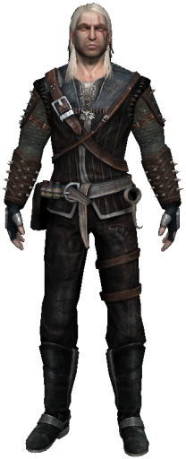 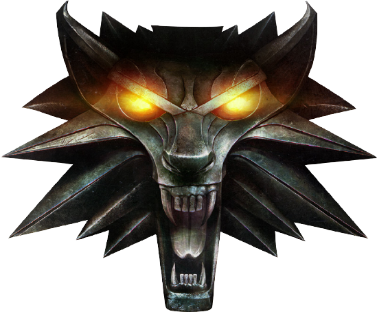 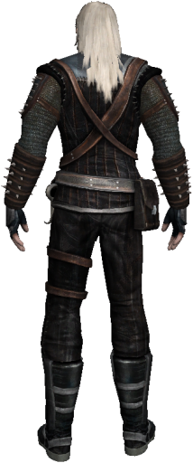
Нейтральная Броня Ворона
Эти доспехи - цель квеста 5 главы Броня. Если Геральт решил наплевать на политические интриги, Белок
и
сумасшедших священников и поступить как настоящий Ведьмак, сохраняя нейтралитет, наш добрый
знакомый,
алхимик Калькштейн, сможет сделать для Белого Волка эти доспехи, когда тот принесет ему все
составляющие
(чему учат этих алхимиков, если они еще и доспехи умеют ковать?!). Эта версия отличается решетчатой
конструкцией наручей и наплечников. Также здесь имеются три слота для эликсиров и свой набор
бонусов.
Урон по вам -20%
Здоровье +75
Энергия +15
Регенерация здоровья и энергии +5%
Сопротивление нокдауну +25%
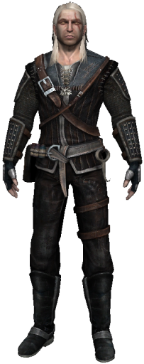 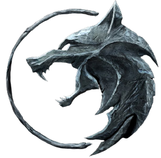 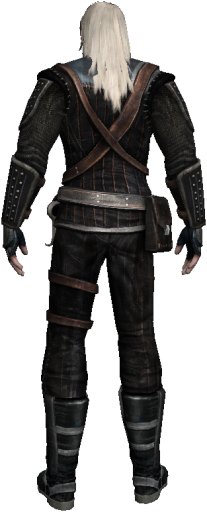
Серебряный Меч
Арондит
Этим оружием Ведьмака одарит Владычица Озера в ходе выполнения задания "Пути Предназначения". Это
легкий, но острый как бритва меч. Чудовищам точно не справиться с противником, обладающим такой
вещью.
Урон + 60%
Атака +10%
Боль +50%
Ослепление +50%
Точный Удар +50%
Воспламенение +50%
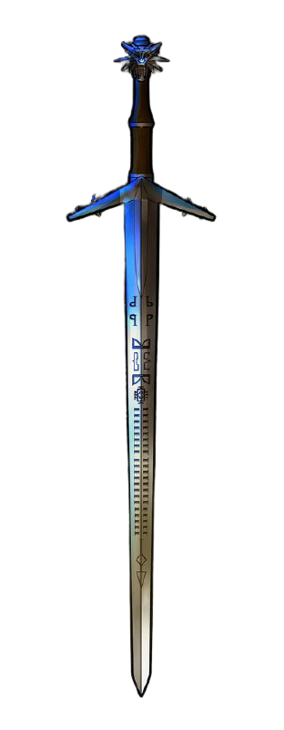 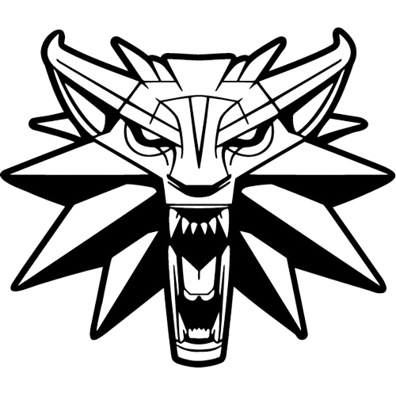 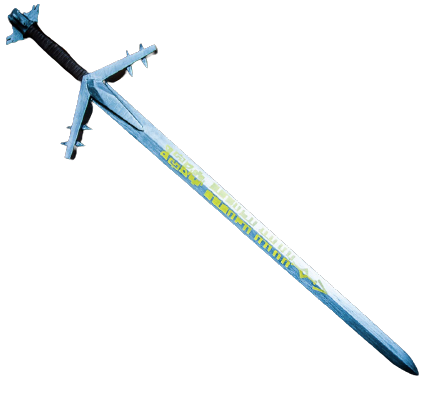
Стальной Меч
Гвихир
Это прекрасное и в то же время смертоносное оружие можно купить в четвертой главе. Оно имеет ряд
преимуществ над большинством других клинков, ибо не зря этот меч самый дорогой в игре. Также его
использует Велерад в третьей главе.
Урон +50%
Обезоруживание +40%
Боль +40%
Точный Удар +40%
Цена покупки 3000
Цена продажи 600
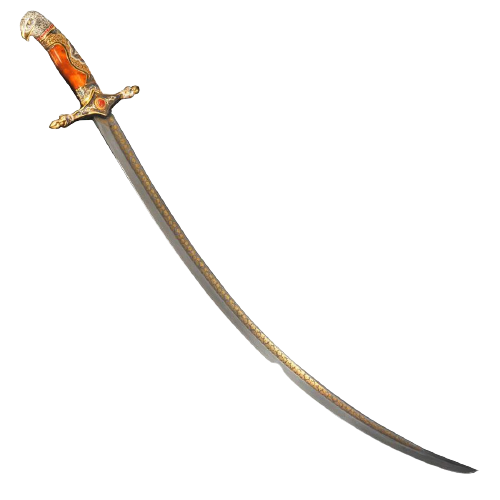 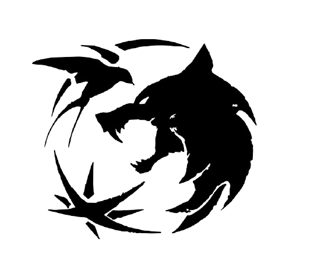 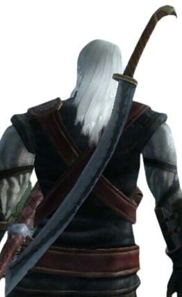